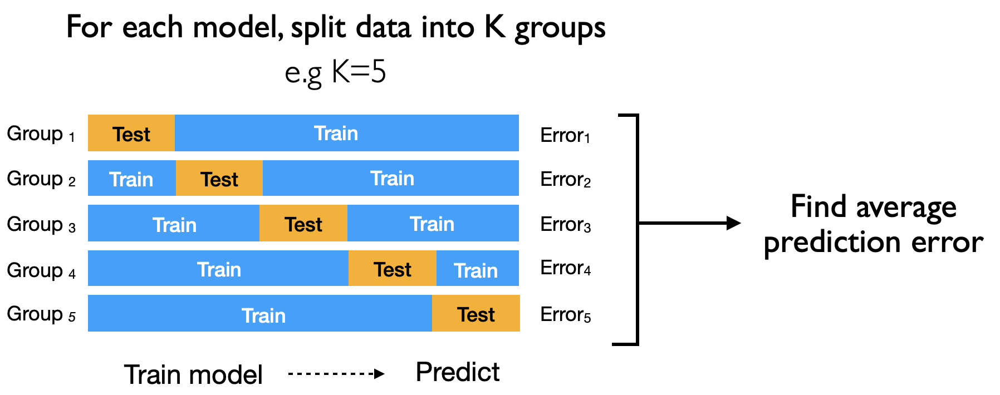

Modeling for Prediction#
We explore how we can build a model using available data with the intent of predicting a response/outcome with new data
Here, the selection of covariates is guided by the prediction accuracy on new data (actual or inferred)
the coefficients give an indication of which covariates are important for the prediction
the coefficients are not meant to explain the effect size on the outcome
Data preparation#
We will use the dataset from the Framingham study, which was a long term study of cardiovascular disease about subjsects in Framingham, USA. In this dataset ~4000 subjects were followed up and clinical data and chronic heart disease outcomes were examined longitudinally over > 10 years
Variables include:
male: 0 = female, 1 = maleage: Age at the time of medical examination in years.education: 1 = Some high school, 2 = high school/GED, 3 = some college/vocational school, 4 = collegecurrentSmoker: Current cigarette smoking at the time of examinationscigsPerDay: Number of cigarettes smoked each dayBPmeds: Use of Anti-hypertensive medication at examprevalentStroke: Prevalent StrokeprevalentHyp: Prevalent Hypertensivediabetes: Diabetic according to criteria of first exam treatedtotChol: Total cholesterol (mg/dL)sysBP: Systolic Blood Pressure (mmHg)diaBP: Diastolic blood pressure (mmHg)BMI: Body Mass Index, weight (kg)/height (m)^2heartRate: Heart rate (beats/minute)glucose: Blood glucose level (mg/dL)
library(tidyverse)
# read data
data<- read_csv("https://raw.githubusercontent.com/kennethban/dataset/main/framingham.csv")
# rename and change data types
data <- data %>%
rename(sex = male) %>%
mutate(sex = as.factor(sex)) %>%
mutate(education = as.factor(education)) %>%
mutate(currentSmoker = as.factor(currentSmoker)) %>%
mutate(BPMeds = as.factor(BPMeds)) %>%
mutate(prevalentStroke = as.factor(prevalentStroke)) %>%
mutate(prevalentHyp = as.factor(prevalentHyp)) %>%
mutate(diabetes = as.factor(diabetes)) %>%
mutate(TenYearCHD = as.factor(TenYearCHD))
# drop missing values
data <- data %>% drop_na
── Attaching core tidyverse packages ───────────────────────────── tidyverse 2.0.0 ──
✔ dplyr 1.1.1 ✔ readr 2.1.4
✔ forcats 1.0.0 ✔ stringr 1.5.0
✔ ggplot2 3.4.2 ✔ tibble 3.2.1
✔ lubridate 1.9.2 ✔ tidyr 1.3.0
✔ purrr 1.0.1
── Conflicts ─────────────────────────────────────────────── tidyverse_conflicts() ──
✖ dplyr::filter() masks stats::filter()
✖ dplyr::lag() masks stats::lag()
ℹ Use the conflicted package (<http://conflicted.r-lib.org/>) to force all conflicts to become errors
Rows: 4240 Columns: 16
── Column specification ─────────────────────────────────────────────────────────────
Delimiter: ","
dbl (16): male, age, education, currentSmoker, cigsPerDay, BPMeds, prevalent...
ℹ Use `spec()` to retrieve the full column specification for this data.
ℹ Specify the column types or set `show_col_types = FALSE` to quiet this message.
We will choose a subset of variables and find a model to predict the systolic BP sysBP from a combination of these variables
data_subset <- data %>%
filter(BPMeds==0) %>%
select(-TenYearCHD, -prevalentStroke, -prevalentHyp, -diaBP, -currentSmoker, -BPMeds)
head(data_subset)
| sex | age | education | cigsPerDay | diabetes | totChol | sysBP | BMI | heartRate | glucose |
|---|---|---|---|---|---|---|---|---|---|
| <fct> | <dbl> | <fct> | <dbl> | <fct> | <dbl> | <dbl> | <dbl> | <dbl> | <dbl> |
| 1 | 39 | 4 | 0 | 0 | 195 | 106.0 | 26.97 | 80 | 77 |
| 0 | 46 | 2 | 0 | 0 | 250 | 121.0 | 28.73 | 95 | 76 |
| 1 | 48 | 1 | 20 | 0 | 245 | 127.5 | 25.34 | 75 | 70 |
| 0 | 61 | 3 | 30 | 0 | 225 | 150.0 | 28.58 | 65 | 103 |
| 0 | 46 | 3 | 23 | 0 | 285 | 130.0 | 23.10 | 85 | 85 |
| 0 | 43 | 2 | 0 | 0 | 228 | 180.0 | 30.30 | 77 | 99 |
Predicting systolic BP as an example#
In predictive modeling, we would like to achieve the lowest prediction error on an out-of-sample dataset that was not used to build the model
We will explore this idea by splitting the dataset into training and test sets
The training dataset will be used to build models with different parameters (covariates)
The model will be used to predict the systolic BP based on the model parameters (covariates)
We will use the initial_split, training and testing functions from the tidymodels library
Define the proportion of the split:
initial_split(data, prop = <proportion of training split>)Generate the training and testing datasets:
training(<initial_split data>)andtesting(<initial_split data>)
library(tidymodels)
set.seed(246) # for reproducibility
data_subset_split <- initial_split(data_subset, prop = 3/4) # 3/4 training data
data_subset_train <- training(data_subset_split)
data_subset_test <- testing(data_subset_split)
head(data_subset_train)
head(data_subset_test)
── Attaching packages ─────────────────────────────────────────── tidymodels 1.0.0 ──
✔ broom 1.0.4 ✔ rsample 1.1.1
✔ dials 1.2.0 ✔ tune 1.1.1
✔ infer 1.0.4 ✔ workflows 1.1.3
✔ modeldata 1.1.0 ✔ workflowsets 1.0.1
✔ parsnip 1.1.0 ✔ yardstick 1.1.0
✔ recipes 1.0.5
── Conflicts ────────────────────────────────────────────── tidymodels_conflicts() ──
✖ scales::discard() masks purrr::discard()
✖ dplyr::filter() masks stats::filter()
✖ recipes::fixed() masks stringr::fixed()
✖ dplyr::lag() masks stats::lag()
✖ yardstick::spec() masks readr::spec()
✖ recipes::step() masks stats::step()
• Learn how to get started at https://www.tidymodels.org/start/
| sex | age | education | cigsPerDay | diabetes | totChol | sysBP | BMI | heartRate | glucose |
|---|---|---|---|---|---|---|---|---|---|
| <fct> | <dbl> | <fct> | <dbl> | <fct> | <dbl> | <dbl> | <dbl> | <dbl> | <dbl> |
| 1 | 46 | 3 | 0 | 0 | 305 | 150.0 | 26.82 | 75 | 75 |
| 0 | 53 | 3 | 20 | 0 | 221 | 131.0 | 24.09 | 90 | 95 |
| 0 | 59 | 3 | 0 | 0 | 240 | 149.0 | 27.48 | 80 | 82 |
| 0 | 40 | 4 | 3 | 0 | 230 | 107.5 | 26.38 | 75 | 76 |
| 0 | 61 | 2 | 0 | 0 | 255 | 114.0 | 24.79 | 83 | 107 |
| 0 | 43 | 1 | 0 | 0 | 229 | 124.0 | 30.28 | 72 | 77 |
| sex | age | education | cigsPerDay | diabetes | totChol | sysBP | BMI | heartRate | glucose |
|---|---|---|---|---|---|---|---|---|---|
| <fct> | <dbl> | <fct> | <dbl> | <fct> | <dbl> | <dbl> | <dbl> | <dbl> | <dbl> |
| 0 | 63 | 1 | 0 | 0 | 205 | 138 | 33.11 | 60 | 85 |
| 0 | 45 | 2 | 20 | 0 | 313 | 100 | 21.68 | 79 | 78 |
| 1 | 43 | 1 | 30 | 0 | 225 | 162 | 23.61 | 93 | 88 |
| 1 | 41 | 2 | 0 | 0 | 195 | 139 | 26.88 | 85 | 65 |
| 0 | 52 | 1 | 0 | 0 | 234 | 148 | 34.17 | 70 | 113 |
| 1 | 35 | 2 | 20 | 0 | 225 | 132 | 26.09 | 73 | 83 |
We will build different models with combinations of covariates on the training dataset data_subset_train. Note that the . notation is a short form for all covariates
model1 <- lm(sysBP ~ age, data_subset_train)
model2 <- lm(sysBP ~ age + sex, data_subset_train)
model3 <- lm(sysBP ~ age + sex + education, data_subset_train)
model4 <- lm(sysBP ~ age + sex + education + glucose, data_subset_train)
model5 <- lm(sysBP ~ age + sex + glucose, data_subset_train)
model6 <- lm(sysBP ~ age + sex + glucose + BMI, data_subset_train)
model7 <- lm(sysBP ~ age + sex + totChol + BMI + heartRate + glucose, data_subset_train)
model8 <- lm(sysBP ~ ., data_subset_train)
We can look at the \(R^2\) fit for the models by extracting it from the fitted model
summary(model)$r.squared
# collect r2 values for all 8 models
r2_fit <- tibble(
model=1:8,
formula=c(model1$call$formula, # extract formula
model2$call$formula,
model3$call$formula,
model4$call$formula,
model5$call$formula,
model6$call$formula,
model7$call$formula,
model8$call$formula),
r2=c(summary(model1)$r.squared, # extract r2
summary(model2)$r.squared,
summary(model3)$r.squared,
summary(model4)$r.squared,
summary(model5)$r.squared,
summary(model6)$r.squared,
summary(model7)$r.squared,
summary(model8)$r.squared)
) %>%
mutate(model=as.factor(model),
formula=as.character(formula))
r2_fit
| model | formula | r2 |
|---|---|---|
| <fct> | <chr> | <dbl> |
| 1 | sysBP ~ age | 0.1413048 |
| 2 | sysBP ~ age + sex | 0.1414696 |
| 3 | sysBP ~ age + sex + education | 0.1448863 |
| 4 | sysBP ~ age + sex + education + glucose | 0.1520279 |
| 5 | sysBP ~ age + sex + glucose | 0.1487736 |
| 6 | sysBP ~ age + sex + glucose + BMI | 0.2274826 |
| 7 | sysBP ~ age + sex + totChol + BMI + heartRate + glucose | 0.2593385 |
| 8 | sysBP ~ . | 0.2611845 |
# adjust size of the image output
options(repr.plot.width=5, repr.plot.height=5)
r2_fit %>% ggplot(aes(x=model, y=r2, group=1)) +
geom_line() +
geom_point() +
theme_grey(base_size=16)
It appears that the model with all the covariates (sysBP ~ .) would give the best fit based on the highest \(R^2\) value.
The \(R^2\) shows that the model explains at best ~20% of the variation in the dataset
The highest \(R^2\) does not mean that the model has the best ability to predict on out-of-sample data
Predicting on hold-out test dataset#
To evaluate whether the model is able to predict using out-of-sample data, we will use the test dataset data_subset_test and use the predict function to calculate the predicted sysBP values from the covariates in the test data
predict(<model>, <test dataset>)
predict1 <- predict(model1, data_subset_test)
predict2 <- predict(model2, data_subset_test)
predict3 <- predict(model3, data_subset_test)
predict4 <- predict(model4, data_subset_test)
predict5 <- predict(model5, data_subset_test)
predict6 <- predict(model6, data_subset_test)
predict7 <- predict(model7, data_subset_test)
predict8 <- predict(model8, data_subset_test)
We will look at a sample of one of the prediction sets predict1
tibble(data_subset_test, predict=predict1) %>% head()
| sex | age | education | cigsPerDay | diabetes | totChol | sysBP | BMI | heartRate | glucose | predict |
|---|---|---|---|---|---|---|---|---|---|---|
| <fct> | <dbl> | <fct> | <dbl> | <fct> | <dbl> | <dbl> | <dbl> | <dbl> | <dbl> | <dbl> |
| 0 | 63 | 1 | 0 | 0 | 205 | 138 | 33.11 | 60 | 85 | 144.0469 |
| 0 | 45 | 2 | 20 | 0 | 313 | 100 | 21.68 | 79 | 78 | 127.3206 |
| 1 | 43 | 1 | 30 | 0 | 225 | 162 | 23.61 | 93 | 88 | 125.4621 |
| 1 | 41 | 2 | 0 | 0 | 195 | 139 | 26.88 | 85 | 65 | 123.6037 |
| 0 | 52 | 1 | 0 | 0 | 234 | 148 | 34.17 | 70 | 113 | 133.8253 |
| 1 | 35 | 2 | 20 | 0 | 225 | 132 | 26.09 | 73 | 83 | 118.0282 |
To gauge how close the predictions are to the actual values in the test dataset, we can calculate the root mean squared error (RMSE)
We can use the RMSE function from the caret library
RMSE(<predict data>, <observed data>where the observed data is thesysBPvariable indata_subset_test
library(caret)
# collect RMSE results for all 8 models from test dataset
test_fit <- tibble(model=1:8,
formula=c(model1$call$formula, # extract formula
model2$call$formula,
model3$call$formula,
model4$call$formula,
model5$call$formula,
model6$call$formula,
model7$call$formula,
model8$call$formula),
RMSE=c(RMSE(predict1, data_subset_test$sysBP), # extract RMSE
RMSE(predict2, data_subset_test$sysBP),
RMSE(predict3, data_subset_test$sysBP),
RMSE(predict4, data_subset_test$sysBP),
RMSE(predict5, data_subset_test$sysBP),
RMSE(predict6, data_subset_test$sysBP),
RMSE(predict7, data_subset_test$sysBP),
RMSE(predict8, data_subset_test$sysBP))) %>%
mutate(model=as.factor(model),
formula=as.character(formula))
test_fit
Loading required package: lattice
Attaching package: ‘caret’
The following objects are masked from ‘package:yardstick’:
precision, recall, sensitivity, specificity
The following object is masked from ‘package:purrr’:
lift
| model | formula | RMSE |
|---|---|---|
| <fct> | <chr> | <dbl> |
| 1 | sysBP ~ age | 19.92564 |
| 2 | sysBP ~ age + sex | 19.90763 |
| 3 | sysBP ~ age + sex + education | 19.83316 |
| 4 | sysBP ~ age + sex + education + glucose | 19.85367 |
| 5 | sysBP ~ age + sex + glucose | 19.92666 |
| 6 | sysBP ~ age + sex + glucose + BMI | 18.96923 |
| 7 | sysBP ~ age + sex + totChol + BMI + heartRate + glucose | 18.72770 |
| 8 | sysBP ~ . | 18.74517 |
# adjust size of the image output
options(repr.plot.width=5, repr.plot.height=5)
test_fit %>% ggplot(aes(x=model, y=RMSE, group=1)) +
geom_line() +
geom_point() +
theme_grey(base_size=16)
We can see that model7 gives the lowest RMSE, indicating that it has the lowest error when predicting the sysBP on the hold-out test dataset that was not used for building the model.
It suggests that
model7has higher generalizability on other unseen datasetsThe model with the best fit \(R^2\) (
model8) is not necessarily the one with the lowest prediction error
Problem of overfitting#
As you can see, adding more covariates may not necessarily give the best prediction accuracy for out-of-sample data
The addition of covariates will increase the model fit for the training data
However, the model may overfit (i.e. learn patterns that are specific for the training data)
Overfitting will reduce the ability for the model to predict well on new unseen samples
Gauging out-of-sample performance with data at hand#
1. K-fold cross validation#
In some cases, we may not have enough data at hand to be able to split them into training and test datasets in order to evaluate which model would have the best predictive performance
We can gauge out-of-sample prediction performance by using all the data at hand data_subset by using a cross-validation approach
The dataset is shuffled randomly and split into \(k\) groups
For each of the \(k^\mathit{th}\) group
Use the \(k^\mathit{th}\) group as the hold-out test dataset
Use the remaining data of \(k - 1\) groups as the training dataset
Fit the model and use it to predict the \(k^\mathit{th}\) test dataset
Evaluate the prediction error
Evaluate the average prediction error for the \(k\) groups for the model

To do this, we will use the trainControl and train functions fro the caret library
We specify the cross validation and number of \(k\) folds:
trainControl(method = "cv", number = <k-folds>)We train the cross validation dataset:
train(<formula>, dataset, method="lm", trControl = <trainControl specification>)
set.seed(246) # for reproducibility
# set the cross validation (10-fold)
train.control <- trainControl(method = "cv", number = 10)
# train the different models
model1_cv <- train(sysBP ~ age,
data = data_subset,
method = "lm",
trControl = train.control)
model2_cv <- train(sysBP ~ age + sex,
data = data_subset,
method = "lm",
trControl = train.control)
model3_cv <- train(sysBP ~ age + sex + education,
data = data_subset,
method = "lm",
trControl = train.control)
model4_cv <- train(sysBP ~ age + sex + education + glucose,
data = data_subset,
method = "lm",
trControl = train.control)
model5_cv <- train(sysBP ~ age + sex + glucose,
data = data_subset,
method = "lm",
trControl = train.control)
model6_cv <- train(sysBP ~ age + sex + glucose + BMI,
data = data_subset,
method = "lm",
trControl = train.control)
model7_cv <- train(sysBP ~ age + sex + totChol + BMI + heartRate + glucose,
data = data_subset,
method = "lm",
trControl = train.control)
model8_cv <- train(sysBP ~ .,
data = data_subset,
method = "lm",
trControl = train.control)
We can check the prediction error by looking at the RMSE
# collect RMSE results for all 8 models from 10-fold CV of full dataset
cv_fit <- tibble(
model=1:8,
formula=c(model1_cv$call$form, # extract formula
model2_cv$call$form,
model3_cv$call$form,
model4_cv$call$form,
model5_cv$call$form,
model6_cv$call$form,
model7_cv$call$form,
model8_cv$call$form),
RMSE=c(model1_cv$results$RMSE, # extract RMSE
model2_cv$results$RMSE,
model3_cv$results$RMSE,
model4_cv$results$RMSE,
model5_cv$results$RMSE,
model6_cv$results$RMSE,
model7_cv$results$RMSE,
model8_cv$results$RMSE)
) %>%
mutate(model=as.factor(model),
formula=as.character(formula))
cv_fit
| model | formula | RMSE |
|---|---|---|
| <fct> | <chr> | <dbl> |
| 1 | sysBP ~ age | 19.57238 |
| 2 | sysBP ~ age + sex | 19.55591 |
| 3 | sysBP ~ age + sex + education | 19.52496 |
| 4 | sysBP ~ age + sex + education + glucose | 19.48790 |
| 5 | sysBP ~ age + sex + glucose | 19.51754 |
| 6 | sysBP ~ age + sex + glucose + BMI | 18.60048 |
| 7 | sysBP ~ age + sex + totChol + BMI + heartRate + glucose | 18.24255 |
| 8 | sysBP ~ . | 18.25071 |
# adjust size of the image output
options(repr.plot.width=5, repr.plot.height=5)
cv_fit %>% ggplot(aes(x=model, y=RMSE, group=1)) +
geom_line() +
geom_point() +
theme_grey(base_size=16)
We can see that model7 has the lowest RMSE, consistent with our previous conclusion using the one-time training/test split dataset
2. AIC criterion#
The cross validation can be done for different number of groups and if the number of folds is maximum \(k = n - 1\), where \(n\) is the number of samples, this is known as leave-one-out cross validation (LOOCV)
As \(n \to \infty\), the estimate of the LOOCV prediction error is given by the Akaike information criterion (AIC)
We can obtain the AIC score using the AIC function
AIC(model)
# collect AIC values from all 8 models for full dataset
AIC_fit <- tibble(
model=1:8,
formula=c(model1$call$formula,
model2$call$formula,
model3$call$formula,
model4$call$formula,
model5$call$formula,
model6$call$formula,
model7$call$formula,
model8$call$formula),
AIC=c(AIC(model1),
AIC(model2),
AIC(model3),
AIC(model4),
AIC(model5),
AIC(model6),
AIC(model7),
AIC(model8))
) %>%
mutate(model=as.factor(model),
formula=as.character(formula))
AIC_fit
| model | formula | AIC |
|---|---|---|
| <fct> | <chr> | <dbl> |
| 1 | sysBP ~ age | 23345.72 |
| 2 | sysBP ~ age + sex | 23347.21 |
| 3 | sysBP ~ age + sex + education | 23342.60 |
| 4 | sysBP ~ age + sex + education + glucose | 23322.29 |
| 5 | sysBP ~ age + sex + glucose | 23326.48 |
| 6 | sysBP ~ age + sex + glucose + BMI | 23070.40 |
| 7 | sysBP ~ age + sex + totChol + BMI + heartRate + glucose | 22962.39 |
| 8 | sysBP ~ . | 22965.75 |
# adjust size of the image output
options(repr.plot.width=5, repr.plot.height=5)
AIC_fit %>% ggplot(aes(x=model, y=AIC, group=1)) +
geom_line() +
geom_point() +
theme_grey(base_size=16)
We can see that model7 has the lowest AIC, indicating that it is likely to have lower out-of-sample predictive error that the other models. This is consistent with the 10-fold cross validation result as well as the prediction error from the one-time train/test dataset split
Application: Building a predictive model and plotting#
Now that we have an idea how we can evaluate the predictive out-of-sample error for a model, we will consider how we search for the set of covariates for prediction. There are several strategies
Forward stepwise selection
Backward stepwise selection
Best subset selection
For stepwise selections, covariates are added or removed one at a time based on a criteria (e.g. only covariates with significant p-values are retained). However, this is not recommended as the resultant model often has poor predictive performance
1. Selection of covariates based on AIC#
Here, we will demonstrate best subset selection, whereby combinations of covariates are evaluated (in this case, using AIC). To do this we will use the glmulti function from the glmulti library
level = 1to consider only independent covariatesmethod:hfor exhaustive search,gfor genetic searchreport: set to FALSE to suppress reports for each stepplotty: set to FALSE to suppress plots for each step
Note that the search can be computationally intensive
use exhaustive search
hif number of covariates is smalluse genetic search
gif number of covariates is large
library(tidyverse)
# read data
data<- read_csv("https://raw.githubusercontent.com/kennethban/dataset/main/framingham.csv")
# rename and change data types
data <- data %>%
rename(sex = male) %>%
mutate(sex = as.factor(sex)) %>%
mutate(education = as.factor(education)) %>%
mutate(currentSmoker = as.factor(currentSmoker)) %>%
mutate(BPMeds = as.factor(BPMeds)) %>%
mutate(prevalentStroke = as.factor(prevalentStroke)) %>%
mutate(prevalentHyp = as.factor(prevalentHyp)) %>%
mutate(diabetes = as.factor(diabetes)) %>%
mutate(TenYearCHD = as.factor(TenYearCHD))
# drop missing values
data <- data %>% drop_na
data_subset <- data %>%
filter(BPMeds==0) %>%
select(-TenYearCHD, -prevalentStroke, -prevalentHyp, -diaBP, -currentSmoker, -BPMeds)
Rows: 4240 Columns: 16
── Column specification ─────────────────────────────────────────────────────────────
Delimiter: ","
dbl (16): male, age, education, currentSmoker, cigsPerDay, BPMeds, prevalent...
ℹ Use `spec()` to retrieve the full column specification for this data.
ℹ Specify the column types or set `show_col_types = FALSE` to quiet this message.
library(glmulti)
models <- glmulti(sysBP ~ ., # . = consider all covariates
data=data_subset,
level=1, # consider only independent covariates
method="h", # exhaustive search
report=FALSE, # suppress messages
plotty=FALSE) # suppress messages
Loading required package: rJava
Loading required package: leaps
We can look at the models evaluated with their AIC scores using the weightable function
weightable(models) %>% head(10)
| model | aic | weights | |
|---|---|---|---|
| <chr> | <dbl> | <dbl> | |
| 1 | sysBP ~ 1 + sex + age + totChol + BMI + heartRate + glucose | 30677.29 | 0.17761325 |
| 2 | sysBP ~ 1 + sex + education + age + totChol + BMI + heartRate + glucose | 30678.11 | 0.11802975 |
| 3 | sysBP ~ 1 + sex + diabetes + age + totChol + BMI + heartRate + glucose | 30678.69 | 0.08842642 |
| 4 | sysBP ~ 1 + sex + age + cigsPerDay + totChol + BMI + heartRate + glucose | 30679.14 | 0.07059790 |
| 5 | sysBP ~ 1 + age + totChol + BMI + heartRate + glucose | 30679.19 | 0.06884899 |
| 6 | sysBP ~ 1 + sex + education + diabetes + age + totChol + BMI + heartRate + glucose | 30679.48 | 0.05941903 |
| 7 | sysBP ~ 1 + education + age + totChol + BMI + heartRate + glucose | 30679.65 | 0.05456322 |
| 8 | sysBP ~ 1 + sex + education + age + cigsPerDay + totChol + BMI + heartRate + glucose | 30679.89 | 0.04835294 |
| 9 | sysBP ~ 1 + age + cigsPerDay + totChol + BMI + heartRate + glucose | 30680.04 | 0.04497316 |
| 10 | sysBP ~ 1 + education + age + cigsPerDay + totChol + BMI + heartRate + glucose | 30680.44 | 0.03686890 |
We can pick the model with the lowest AIC by selecting objects[[1]] from the glmulti object
top_model <- models@objects[[1]] # top model with lowest AIC
top_model %>% broom::tidy()
| term | estimate | std.error | statistic | p.value |
|---|---|---|---|---|
| <chr> | <dbl> | <dbl> | <dbl> | <dbl> |
| (Intercept) | 25.29907956 | 3.341256428 | 7.571726 | 4.670821e-14 |
| sex1 | -1.23306570 | 0.625202482 | -1.972266 | 4.865695e-02 |
| age | 0.78236573 | 0.037771790 | 20.712964 | 4.726352e-90 |
| totChol | 0.03521470 | 0.007323071 | 4.808734 | 1.582146e-06 |
| BMI | 1.40539355 | 0.078236370 | 17.963430 | 4.044733e-69 |
| heartRate | 0.27045117 | 0.026326424 | 10.272993 | 2.046549e-24 |
| glucose | 0.03723685 | 0.013644571 | 2.729060 | 6.382910e-03 |
The formula for predicting the systolic BP can be expressed as
Note that in a predictive model, not all coefficients will have significant p-values (p < 0.05)
2. Statistical plotting of coefficients#
We can plot the coefficients to show the relative weights of the coefficients that contribute to the predictive model using ggcoefstats from ggstatsplot
sort: set toascendingto sort by effect sizeexclude.intercept: set to TRUE to omit intercept
library(ggstatsplot)
# adjust size of the image output
options(repr.plot.width=10, repr.plot.height=10)
top_model %>% ggcoefstats(sort="ascending",
exclude.intercept = TRUE) +
theme_grey(base_size = 20)
You can cite this package as:
Patil, I. (2021). Visualizations with statistical details: The 'ggstatsplot' approach.
Journal of Open Source Software, 6(61), 3167, doi:10.21105/joss.03167

The best subset selection approach may not be feasible with increasing number of parameters, as the total number of models to be evaluated is \(2^p\). For example
for 9 parameters in the dataset = \(2^9 = 512\)
for 20 parameters = \(2^{20} = 1048576\)
for 50 parameters = \(2^{50} = 1125899906842624\)
There are alternative regression methods that can be used fo variable selection (e.g. Ridge, LASSO, Elastic Net) but they are outside the scope of this course
Exercise - Modeling for prediction#
For this exercise, we will use the subset of the Framingham data data_subset and find the model that predicts totChol with the lowest AIC
library(tidyverse)
# read data
data<- read_csv("https://raw.githubusercontent.com/kennethban/dataset/main/framingham.csv")
# rename and change data types
data <- data %>%
rename(sex = male) %>%
mutate(sex = as.factor(sex)) %>%
mutate(education = as.factor(education)) %>%
mutate(currentSmoker = as.factor(currentSmoker)) %>%
mutate(BPMeds = as.factor(BPMeds)) %>%
mutate(prevalentStroke = as.factor(prevalentStroke)) %>%
mutate(prevalentHyp = as.factor(prevalentHyp)) %>%
mutate(diabetes = as.factor(diabetes)) %>%
mutate(TenYearCHD = as.factor(TenYearCHD))
# drop missing values
data <- data %>% drop_na
# prepare subset of data
data_subset <- data %>%
filter(BPMeds==0) %>%
select(-TenYearCHD, -prevalentStroke, -prevalentHyp, -diaBP, -currentSmoker, -BPMeds)
head(data_subset)
Rows: 4240 Columns: 16
── Column specification ─────────────────────────────────────────────────────────────
Delimiter: ","
dbl (16): male, age, education, currentSmoker, cigsPerDay, BPMeds, prevalent...
ℹ Use `spec()` to retrieve the full column specification for this data.
ℹ Specify the column types or set `show_col_types = FALSE` to quiet this message.
| sex | age | education | cigsPerDay | diabetes | totChol | sysBP | BMI | heartRate | glucose |
|---|---|---|---|---|---|---|---|---|---|
| <fct> | <dbl> | <fct> | <dbl> | <fct> | <dbl> | <dbl> | <dbl> | <dbl> | <dbl> |
| 1 | 39 | 4 | 0 | 0 | 195 | 106.0 | 26.97 | 80 | 77 |
| 0 | 46 | 2 | 0 | 0 | 250 | 121.0 | 28.73 | 95 | 76 |
| 1 | 48 | 1 | 20 | 0 | 245 | 127.5 | 25.34 | 75 | 70 |
| 0 | 61 | 3 | 30 | 0 | 225 | 150.0 | 28.58 | 65 | 103 |
| 0 | 46 | 3 | 23 | 0 | 285 | 130.0 | 23.10 | 85 | 85 |
| 0 | 43 | 2 | 0 | 0 | 228 | 180.0 | 30.30 | 77 | 99 |
Part 1#
Use glmulti to do a best subset selection of covariates and find the top model with the lowest AIC that predicts totChol
Store the results of the
glmultibest subsets selection inmy_modelsInspect the top 10 models using
weightableStore the model with the lowest AIC in
my_top_modelPrint the top model with
broom::tidy
library(glmulti)
# start here
Show code cell content
# solution
library(glmulti)
my_models <- glmulti(totChol ~ ., # . = consider all covariates
data=data_subset,
level=1, # consider only independent covariates
method="h", # exhaustive search
report=FALSE, # suppress messages
plotty=FALSE) # suppress messages
weightable(my_models) %>% head(10)
my_top_model <- my_models@objects[[1]]
my_top_model %>% broom::tidy()
| model | aic | weights | |
|---|---|---|---|
| <chr> | <dbl> | <dbl> | |
| 1 | totChol ~ 1 + sex + education + age + cigsPerDay + sysBP + BMI + heartRate | 36535.41 | 0.448623015 |
| 2 | totChol ~ 1 + sex + education + age + cigsPerDay + sysBP + BMI + heartRate + glucose | 36537.25 | 0.178791795 |
| 3 | totChol ~ 1 + sex + education + diabetes + age + cigsPerDay + sysBP + BMI + heartRate | 36537.40 | 0.165098241 |
| 4 | totChol ~ 1 + sex + education + diabetes + age + cigsPerDay + sysBP + BMI + heartRate + glucose | 36539.18 | 0.068054519 |
| 5 | totChol ~ 1 + sex + age + cigsPerDay + sysBP + BMI + heartRate | 36539.95 | 0.046128611 |
| 6 | totChol ~ 1 + sex + age + cigsPerDay + sysBP + BMI + heartRate + glucose | 36541.78 | 0.018559577 |
| 7 | totChol ~ 1 + sex + diabetes + age + cigsPerDay + sysBP + BMI + heartRate | 36541.95 | 0.017023842 |
| 8 | totChol ~ 1 + sex + education + age + sysBP + BMI + heartRate | 36541.98 | 0.016755020 |
| 9 | totChol ~ 1 + sex + education + age + sysBP + BMI + heartRate + glucose | 36543.69 | 0.007133634 |
| 10 | totChol ~ 1 + sex + diabetes + age + cigsPerDay + sysBP + BMI + heartRate + glucose | 36543.73 | 0.006983164 |
| term | estimate | std.error | statistic | p.value |
|---|---|---|---|---|
| <chr> | <dbl> | <dbl> | <dbl> | <dbl> |
| (Intercept) | 113.8290528 | 7.75899885 | 14.670585 | 2.384013e-47 |
| sex1 | -6.0739199 | 1.53543384 | -3.955833 | 7.776392e-05 |
| education2 | 3.7887521 | 1.73243683 | 2.186950 | 2.881148e-02 |
| education3 | 5.2297499 | 2.06161340 | 2.536727 | 1.123206e-02 |
| education4 | 5.6922220 | 2.36553669 | 2.406313 | 1.616542e-02 |
| age | 1.2585000 | 0.09213703 | 13.659004 | 1.971854e-41 |
| cigsPerDay | 0.1869214 | 0.06388416 | 2.925942 | 3.456008e-03 |
| sysBP | 0.1854999 | 0.03822853 | 4.852394 | 1.272473e-06 |
| BMI | 0.7246850 | 0.18871204 | 3.840163 | 1.251061e-04 |
| heartRate | 0.2052317 | 0.06121968 | 3.352382 | 8.096151e-04 |
Part 2#
Plot the coefficients using ggcoeftstats. You may exclude the intercept
Comment on the covariates that have the largest contribution to the prediction model
library(ggstatsplot)
# start here
Show code cell content
# solution
library(ggstatsplot)
my_top_model %>% ggcoefstats(sort="ascending",
exclude.intercept=TRUE)
Number of labels is greater than default palette color count.
• Select another color `palette` (and/or `package`).